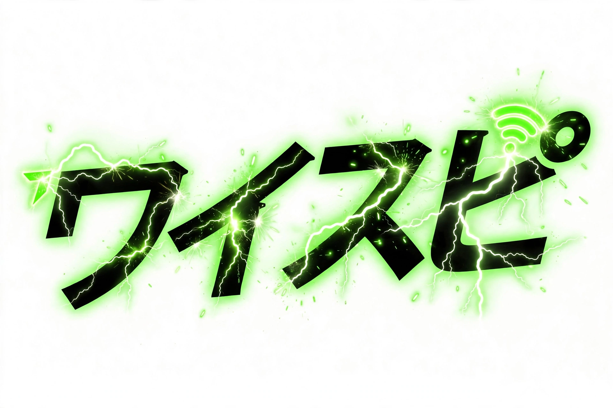
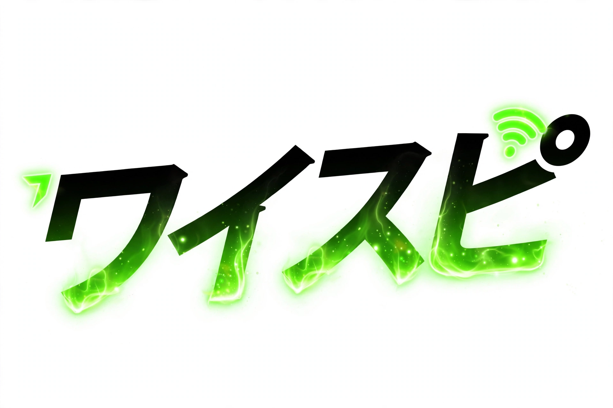
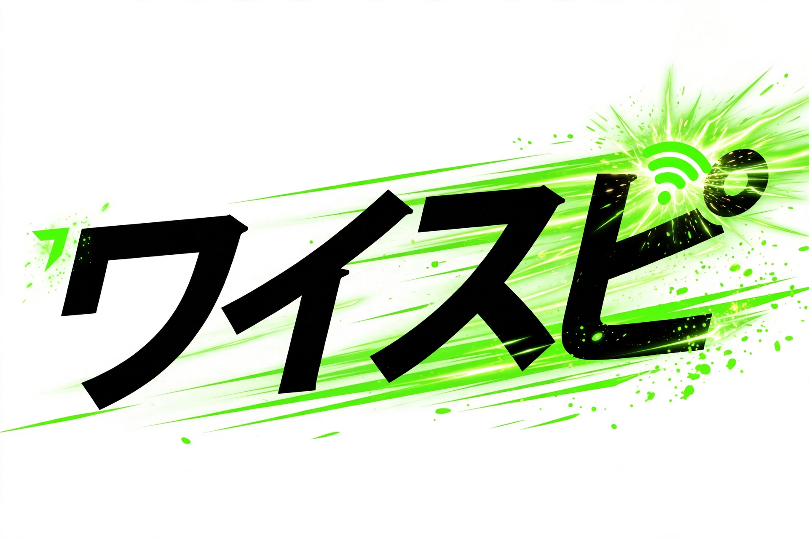
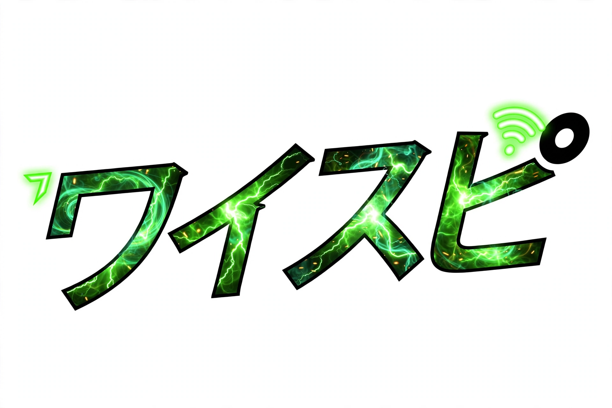
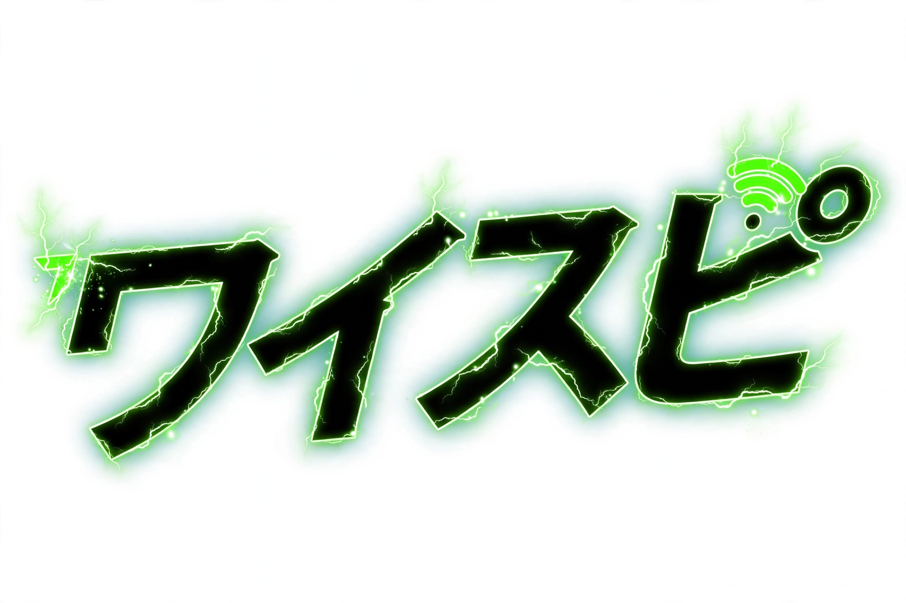

元の4番ワイスピ／ストリートタイポ（基準）
第1ラウンドの選出案。極太・傾斜・角字形のストリートタイポ＋小さな電波ドット。色：黒＋蛍光グリーン。以下の5案はこの字形と世界観を基準に磨いたものです。
1ワイスピ／プラズマ電撃

黒文字の表面を蛍光グリーンの電撃が走り、稲妻と火花で全体が帯電する、プラズマ感がいちばん強い案。
2ワイスピ／発光グラデーション

文字の下部から蛍光グリーンのプラズマが立ちのぼるグラデーション。黒の重さと発光の軽さが同居する案。
3ワイスピ／バースト＆スピード

電波マークからプラズマが炸裂し、スピードラインが右へ流れる。傾斜を強めた、いちばん動的で速い案。
4ワイスピ／プラズマ内包

黒い輪郭の内側に、渦巻く蛍光グリーンのプラズマを閉じ込めた案。文字そのものがエネルギー体になっている。
5ワイスピ／帯電アウトライン

黒文字の輪郭を蛍光グリーンの電撃オーラがなぞる。字間を詰めた、いちばんタイトで洗練された案。